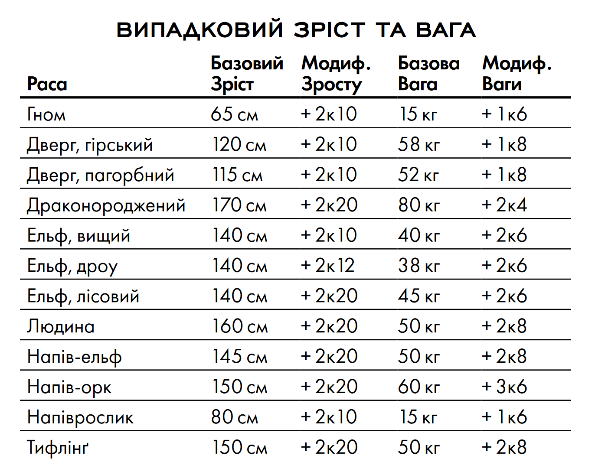
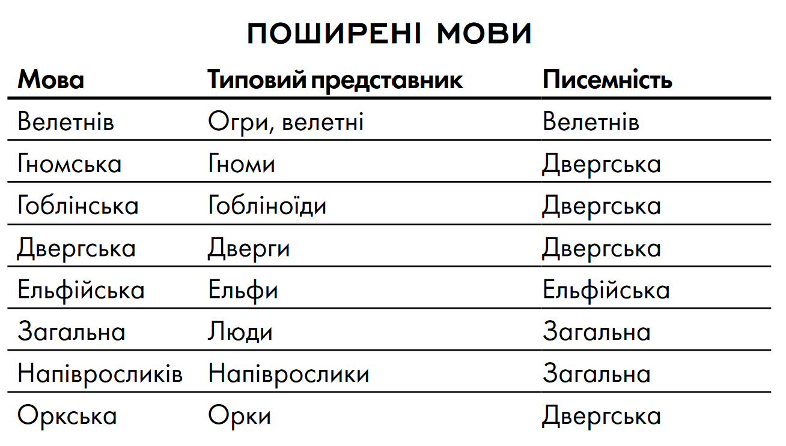
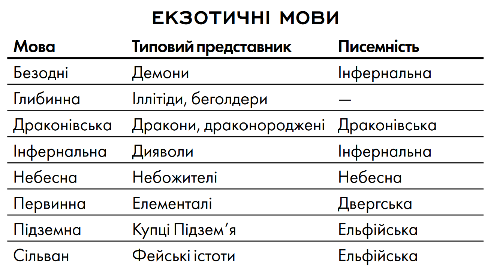
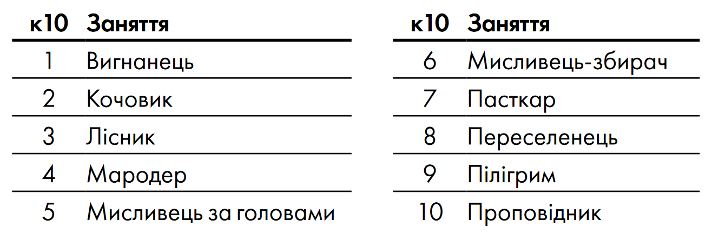

РОЗДІЛ 3. КЛАСИ
Шукачі пригод — це незвичні істоти, яких підштовхує до руху жага до життєвих вражень, на які інші ніколи б не наважилися. Це герої, які досліджують темні куточки світу і долають випробування, яким більшість жінок і чоловіків ніколи б не змогли протистояти. Клас є основним мірилом талантів твого персонажа. Це не просто його професія, це — його покликання. Клас формує твоє уявлення про світ і взаємодію з ним, а також твоє відношення до інших створінь і сил мультивсесвіту. Боєць, наприклад, може дивитися на світ прагматично, з точки зору стратегії та маневрів, і бачити себе всього лише пішаком у великій грі. Жрець навпаки, може бачити себе в якості обраного учасника грандіозного плану божества, або конфлікту, який назріває між різними богами. У бійця є зв'язки в організаціях найманців або військах, а жрець може знати безліч священиків, паладинів і цілителів, які розділяють його релігійні вірування. Твій клас дає тобі цілий ряд особливих умінь, таких як майстерність бійця у володінні зброєю і обладунками, або уміння виконувати заклинання у чарівника. На нижчих рівнях твій клас дає тобі лише два або три уміння, проте при досягненні вищих рівнів ти будеш здобувати нові здібності, а твої існуючі уміння покращаться. Опис кожного класу в цьому розділі включає в себе таблицю з коротким переліком всіх переваг, які ти отримуєш на кожному рівні, а також детальний опис кожної з них. Шукачі пригод іноді можуть розвиватись одразу в декількох класах. Спритник може поміняти життєвий шлях і дати присягу паладина. Варвар може виявити приховані магічні здібності та почати навчатися в класі чарівника, паралельно продовжуючи вдосконалюватися як варвар. Ельфи відомі тим, що поєднують військову майстерність з магічною підготовкою, і розвиваються як бійці та чарівники одночасно. Опціональні правила такого комбінування класів називаються мультикласовістю, і описані в розділі 6. Дванадцять класів, перерахованих в таблиці «Класи», зустрічаються майже у всіх світах DnD і визначають найбільш типових шукачів пригод.
ДРУЇД

Підкидаючи вгору сучкуватий посох із гостролиста, ельф викликає гнів небесної стихії і обрушує розряди блискавок на орків, які посміли загрожувати його лісу вогнем.
Високо в кроні дерева, пильно оглядаючи культистів, затаїлась людина, яка прийняла подобу леопарда, спостерігаючи з джунглів за чужорідною архітектурою храму Злої Стихії Повітря.
Рубаючи мечем з чистого полум'я, напів-ельф кидається в гущу армії скелетів, щоб знищити блюзнірську магію, яка повернула їм потворну подобу життя.
Закликаючи стихії або приймаючи подобу тварин, друїди втілюють непорушність, гнучкість і гнів природи. Вони ні в якому разі не володарі стихій — але, тим не мен ше, друїди відчувають себе частиною нездоланної волі матінки-природи.
СИЛИ ПРИРОДИ
На першому місці для друїда завжди стоїть природа. Саме вона є джерелом всіх їхніх заклинань і магічних здібностей, безпосередньо, або ж через природне божество. Багато хто віддає перевагу шляху духовного єднання з природою, але є й ті, хто просто служать богам диких просторів, тварин або стихій. Зазвичай віру друїдів, яка існує з давніх-давен, також називають Старою Вірою, протиставляючи її поклонінню у храмах та вівтарях.
Заклинання друїдів впливають на світ через тварин або навколишню природу. Це сила ікла та кігтя, сонця і місяця, вогню і бурі. Також друїди вчаться приймати вигляд звірів, а деякі настільки заглиблюються в це уміння, що назавжди залишаються у звіриному вигляді.
ЗБЕРЕЖЕННЯ РІВНОВАГИ
Для друїдів природа являє собою хитку рівновагу. Повітря, земля, вогонь і вода — ті чотири стихії, які становлять основу світу — повинні врівноважувати одна одну. Якщо одна зі стихій вийде в першість, світ може припинити існування, адже він буде поборений стихійною площиною і розірваний на елементарні складові. Щоб не допустити цього, друїди протистоять сектам Стихійного Зла та всім, хто прагне наділити будь-яку зі стихій більшою владою.
Також друїдів турбує тонка екологічна рівновага, необхідна флорі і фауні, а також готовність цивілізованих поселень жити в гармонії з природою, а не протиставляти себе їй. Жорстокість природи — частина природного порядку, і друїди не терплять усього чужорідного, включаючи аберацій (іллітіди і беголдери) та нежить (зомбі і вампіри). Іноді друїди здійснюють полювання на таких істот, особливо якщо ті наближаються до їх територій.
Друїди нерідко займаються охороною священних земель і областей незайманої природи. Втім, при достатній загрозі природній рівновазі або підзахисній землі, друїд може перейти до активної боротьби з напастю, ступивши на шлях шукача пригод.
СТВОРЕННЯ ДРУЇДА
Створюючи персонажа-друїда, подумай про те, що сформувало його тісний зв'язок з природою. Можливо, він родом з місць, де ще жива Стара Віра. Або ж його, кинутого дитиною в гущавині лісу, знайшов і виростив друїд. Можливо, персонаж мав досвід зустрічі з духом природи — скажімо, пережив напад гігантського орла або лютого вовка. А може, він народився в розпал бурі або під час виверження вулкана, що стало знаком приготованого йому шляху друїда.
Чи завжди він був мандрівним друїдом чи може колись охороняв гай або струмок? Можливо, зло отруїло його батьківщину, і він відправився у великий світ в пошуках надії та нового сенсу життя.
ШВИДКЕ СТВОРЕННЯ
Ти можеш швидко створити друїда, дотримуючись цих рекомендацій. По-перше, у твоєї Мудрості повинен бути найвищий показник. Наступним за величиною показником має бути твоя Статура. По-друге, вибери передісторію «самітник».
КЛАСОВІ УМІННЯ
Будучи друїдом, ти здобуваєш наступні класові уміння.
ЗДОРОВ'Я
Кубик Здоров'я: 1к8 за кожен рівень друїда
Здоров'я на 1 рівні: 8 + твій модифікатор Статури
Здоров'я на вищих рівнях: 1к8 (або 5) + твій модифікатор Статури за кожен рівень друїда після 1-го
ВОЛОДІННЯ
Обладунками: Легкі та середні обладунки, щити (друїди не носять обладунки і щити з металу)
Зброєю: Бойові посохи, булави, дротики, кийки, кинджали, списи, метальні списи, пращі, серпи, шаблі
Інструментами: Набір травника
Кидками рятунку: Інтелект, Мудрість
Навичками: Вибери дві: Аналіз поведінки, Виживання, Догляд тварин, Медицина, Містицизм, Природа, Релігія, Уважність
СПОРЯДЖЕННЯ
Ти починаєш з наступним спорядженням в додаток до спорядження, яке отримав за свою передісторію:
- (а) щит (дерев'яний) або (б) будь-яка проста зброя
- (а) шабля або (б) будь-яка проста рукопашна зброя
- Шкіряний обладунок, набір мандрівника і друїдичний центр
МОВА ДРУЇДІВ
Ти знаєш таємну мову друїдів. Ти можеш розмовляти на ній та залишати таємні послання. Ти та всі, хто знає цю мову, автоматично помічаєте такі послання. Інші можуть помітити присутність такого послання при успішній перевірці Мудрості (Уважності) з СК 15, але без допомоги магії не зможуть розшифрувати його.
ВИКОНАННЯ ЗАКЛИНАНЬ
Для виконання заклинань друїди користуються сакральною есенцією самої природи, вдихаючи в неї свою волю. Загальні правила щодо виконання заклинань дивись у розділі 10, а в розділі 11 ти знайдеш список заклинань, доступних друїду.
ЗАГОВОРИ
На 1 рівні ти знаєш два заговори на власний вибір зі списку доступних друїду. При досягненні вищих рівнів ти вивчаєш нові заговори, як це вказано в колонці «Відомі заговори» в таблиці «Друїд».
ПІДГОТОВКА ТА ВИКОНАННЯ ЗАКЛИНАН
Таблиця «Друїд» показує, скільки магічних слотів у тебе є для виконання заклинань друїда 1-го і вищих рівнів. Щоб виконати заклинання, тобі необхідно витратити магічний слот як мінімум того ж рівня, що і саме заклинання. По завершенню тривалого відпочинку ти відновлюєш усі свої витрачені магічні слоти.
Ти мусиш підготувати список заклинань друїда, які зможеш виконувати. Для цього, вибери кількість заклинань друїда, рівну твоєму модифікатору Мудрості + твій рівень друїда (мінімум одне заклинання). Рівень кожного обраного заклинання не повинен перевищувати рівень найвищого наявного у тебе магічного слота.
Наприклад, якщо ти друїд 3 рівня, то у тебе є чотири магічні слоти 1-го рівня та два слоти 2 рівня. Якщо твій модифікатор Мудрості становить +3, то твій список підготованих заклинань може включати в себе шість заклинань 1 або 2 рівня, в будь-якій комбінації. Якщо ти підготував заклинання 1 рівня лікування ран, то ти можеш виконати його, витративши або магічний слот 1-го рівня, або слот 2 рівня. Виконання заклинання не видаляє його з твого списку під- готованих заклинань.
Ти також можеш змінювати свій список підготованих заклинань щоразу, коли завершуєш тривалий відпочинок. Підготовка нового списку заклинань друїда вимагає часу, проведеного в молитвах і медитації: не менше 1 хвилини за кожен рівень заклинання для кожного заклинання у твоєму списку.
БАЗОВА ХАРАКТЕРИСТИКА
Друїдичні заклинання втілюються в життя за допомогою Мудрості, оскільки вимагають віри та близькості з природою. Ти використовуєш свою Мудрість щоразу, коли заклинання посилається на твою базову характеристику. Крім того, ти використовуєш свою Мудрість для визначення СК кидків рятунку від твоїх заклинань друїда, а також коли здійснюєш для них кидок атаки.
СК рятунку від заклинань = 8 + твій бонус майстерності + твій модифікатор Мудрості
Модифікатор атаки заклинань = твій бонус майстерності + твій модифікатор Мудрості
СВЯЩЕННІ ДЕРЕВА ТА РОСЛИНИ
Деякі рослини у друїдів вважаються священними. Зокрема, це береза, бузина, дуб, верба, ялівець, вільха, омела, горіх, падуб (він же гостролист), горобина, тис і ясен. Ці рослини часто використовуються для виготовлення друїдичного центру, який може включати, наприклад, гілку дуба або тису, чи паростки омели.
Деревина підходить і для інших виробів, включаючи зброю і щити. Тис пов'язаний зі смертю і переродженням, тому з нього роблять рукоятки шабель і серпів. Ясен символізує життя, а дуб — силу: з них виходять чудові кийки, дубини, бойові палиці і щити. Вільху вважають рослиною повітря і роблять з неї метальну зброю, наприклад, дротики і метальні списи.
Друїди з місцин, де ці рослини чужі, звертаються до місцевих видів. Наприклад, пустельний друїд може використовувати юку і кактус.
ВИКОНАННЯ РИТУАЛІВ
Ти можеш виконати будь-яке із твоїх підготованих заклинання друїда як ритуал, якщо в описі цього заклинання стоїть помітка «ритуал».
ОСЕРЕДОК МАГІЇ
Ти можеш використовувати друїдичний центр (дивись в розділі 5) в якості осередку магії для твоїх заклинань друїда.
ДИКА ПОДОБА
Починаючи з 2 рівня ти можеш використати свій вчинок, щоб за допомогою магії прийняти подобу звіра, якого ти раніше бачив. Ти можеш використати це уміння два рази, після чого ти мусиш завершити тривалий відпочинок, щоб отримати змогу використовувати його знову.
Твій рівень друїда визначає, у яких звірів ти можеш перетворюватися. Наприклад, на 2 рівні ти можеш перетворитись на будь-якого звіра з показником небезпечності (ПН) ¼, або нижчим, у якого немає швидкості польоту і плавання.
| Рівень | Макс. ПН | Обмеження | Приклад |
|---|---|---|---|
| 2 | ¼ | Немає швидкості польоту і плавання | Вовк |
| 4 | ½ | Немає швидкості польоту | Крокодил |
| 8 | 1 | - | Гігантський орел |
Ти можеш залишатись у вигляді звіра кількість годин, рівну половині твого рівня друїда (округленого в меншу сторону). Після цього ти повертаєшся в нормальний вигляд, якщо тільки не витратиш ще одне використання цього уміння. Ти можеш використати бонусний вчинок у свій хід, щоб повернутись у свою нормальну форму достроково. Ти автоматично повертаєшся в нормальний вигляд, якщо стаєш непритомний, твоє здоров'я опускається до 0 або якщо ти вмираєш.
Коли ти перетворений, діють наступні правила:
- Твої ігрові параметри заміняються параметрами звіра, проте у тебе зберігається твій світогляд, особистість і показники Інтелекту, Мудрості і Харизми. У тебе також залишаються твої володіння навичками і кидками рятунку, в додаток до тих, які є у звіра. Якщо у звіра є таке ж володіння, як у тебе, а його бонус, вказаний у його блоці статистики, вищий від твого, використовуй бонус звіра. Якщо у звіра є легендарні вчинки або вчинки лігва, тобі не можна їх використовувати.
- Коли ти перетворюєшся, ти отримуєш здоров'я і Кубик Здоров'я звіра. Коли ти повертаєшся в нормальний вигляд, твоє здоров'я буде таким же, як до перетворення. Однак, якщо ти повернувся у свій вигляд в результаті опускання здоров'я до 0, то усі «зайві» ушкодження переносяться на твій нормальний вигляд. Наприклад, якщо в подобі звіра ти отримав 10 ушкоджень, маючи при цьому 1 здоров'я, то ти повертаєшся в нормальний вигляд і отримуєш ще 9 ушкоджень. Якщо ці ушкодження опускають здоров'я твого нормального вигляду до 0, то твій персонаж втрачає свідомість, як це відбувається зазвичай.
- Тобі не можна виконувати заклинання, а твоя здатність розмовляти і здійснювати вчинки, які вимагають рук, стають обмежені виглядом звіра. Прийняття форми звіра не перериває твою концентрацію на виконуваному раніше заклинанні, а також не заважає здійснювати вчин- ки, які є частиною раніше виконаного тобою заклинання, такі як у випадку заклинання виклик блискавки.
- Ти зберігаєш переваги від усіх умінь твого класу, расових особливостей та інших джерел, і можеш користуватись ними, якщо твій новий вигляд також фізично на це спроможний. Однак ти не зможеш використовувати свої особливі чуття, такі як темний зір, якщо у твого нового вигляду їх немає.
- Ти сам вирішуєш, чи твоє спорядження падає на землю, чи зіллється з новою подобою, чи залишиться одягненим. Одягнене спорядження працює, як зазвичай, але Майстер вирішує, чи твоя нова форма здатна ефективно використовувати його з практичної точки зору, опираючись на розмір та форму істоти. Твоє спорядження не змінює форму і розмір під новий вигляд, тому якщо воно не підходить новій подобі, воно повинно впасти на землю або злитися з новою зовнішністю. Злите з новою подобою спорядження не дає тобі жодних бонусів, доки ти не приймеш свій нормальний вигляд.
КОЛО ДРУЇДІВ
На 2 рівні ти обираєш, до якого кола друїдів належить твій друїд: Кола Землі або Кола Місяця, обидва з яких пояснені в кінці опису класу. Цей вибір надає тобі додаткові уміння на 2, 6, 10 та 14 рівні.
ПІДВИЩЕННЯ ХАРАКТЕРИСТИК
При досягненні 4, 8, 12, 16 і 19 рівнів ти можеш підвищити показник однієї зі своїх характеристик на 2 або показники двох характеристик на 1. Згідно правил, за допомогою цього уміння не можна підвищувати показник характеристики вище 20.
БЕЗЧАСНЕ ТІЛО
Починаючи з 18 рівня, природна магія, яка проникає в твоє тіло, уповільнює процес старіння. За кожні 10 прожитих років твоє тіло старіє лише на 1 рік.
ЗВІРИНЕ ЗАКЛИНАННЯ
Також із 18 рівня ти можеш виконувати більшість своїх заклинань друїда, приймаючи будь-яку Дику Подобу. Будучи звіром, ти можеш задовольнити тілесний та словесний компонент заклинання друїда, проте тобі все ще необхідно надавати для нього матеріальні компоненти (якщо вони необхідні).
АРХІДРУЇД
На 20 рівні ти можеш використовувати Дику Подобу необмежену кількість разів.
Крім того, ти можеш ігнорувати тілесний і словесний компоненти заклинань друїда, а також матеріальні компоненти без зазначеної ціни, які не поглинаються заклинанням. Це уміння працює як у звичайному вигляді, так і у Дикій Подобі.
КОЛА ДРУЇДІВ
Мало хто знає, що друїди складають єдине суспільство, яке існує без будь-яких політичних кордонів. Кожен друїд вважається частиною суспільства, навіть якщо живе настільки ізольовано, що ніколи не бачив інших високопоставлених побратимів і ні разу не бував на зборах. Друїди вважають один одного братами і сестрами, але, подібно до диких звірів, вони також не цураються суперництва між собою.
У місцевому масштабі друїди об'єднуються в кола, пов'язані між собою спільними уявленнями про природу, рівновагу та роль друїдів у світі.
КОЛО ЗЕМЛІ
Коло Землі складається з містиків і мудреців, які поколіннями передають із вуст в уста складну систему древніх знань та обрядів. Збори проводяться у колі з дерев або мегалітів, де таємною мовою звучать секрети самої світобудови. Наймудріші представники цього кола служать духовними лідерами і радниками вождів у громадах, які проповідують Стару Віру. Причетність до Кола Землі наділяє магію дру- їда силою тих місць, де його посвятили у священні таїнства.
ДОДАТКОВИЙ ЗАГОВІР
Обравши Коло Землі на 2 рівні, ти вивчаєш один додатковий заговір друїда на твій вибір.
ПРИРОДНЕ ВІДНОВЛЕННЯ
Починаючи з 2 рівня, єднання з природою шляхом медитації дозволяє тобі частково відновити магічну силу. Під час короткого відпочинку ти можеш вибрати витрачені магічні слоти, які хочеш відновити. Сума рівнів обраних слотів не повинна перевищувати половину твого рівня друїда (округляючи в більшу сторону), і жоден з них не може бути 6 рівня або вищого. Якщо ти це робиш, ти не зможеш використати це уміння повторно, доки не завершиш тривалий відпочинок.
Наприклад, якщо ти друїд 4 рівня, ти можеш відновити цим умінням 2 рівні магічних слотів. Це може бути або один слот 2 рівня або два слоти 1 рівня.
ЗАКЛИНАННЯ КОЛА
Духовний зв'язок друїда із землею наділяє його знанням певних заклинань. На 3, 5, 7 і 9 рівні ти отримуєш доступ до заклинань, які відповідають тим землям, де ти став друїдом. Обери одну із земель — болото, гора, ліс, луг, Підзем'я, пустелю, тундру або узбережжя — та звернись до відповідного списку заклинань.
Отримавши доступ до заклинання кола, ти завжди будеш мати його підготованим, і його не треба враховувати у список заклинань, який ти можеш підготувати за день. Якщо ти отримуєш доступ до заклинання, якого немає у списку заклинань друїда, воно все одно буде вважатися для тебе заклинанням друїда.


СТЕЖКАМИ ЗЕМЛІ
Починаючи з 6 рівня, пересування по немагічній важкопрохідній місцевості не коштує для тебе додаткового пересування. Ти також можеш проходити через немагічну рослинність без зниження швидкості і не отримуєш ушкоджень від її шипів, виростів та інших перешкод.
Крім того, ти робиш з перевагою кидки рятунку проти магічно створених або керованих магією рослин, які здатні ускладнювати пересування — наприклад, від заклинання обплутування.
ХРАНИТЕЛЬ ПРИРОДИ
Починаючи з 10 рівня тебе не можуть причарувати або налякати феї та елементалі. Ти також отримуєш імунітет до хвороб і отрут.
ПРИРОДНА БЛАГОДАТЬ
Коли ти досягаєш 14 рівня, природні створіння починають відчувати твій тісний зв'язок з природним світом і вагаються при нападі. Коли звір або істота-рослина атакує тебе, ця істота повинна зробити кидок рятунку Мудрості проти твоєї СК рятунку від заклинань друїда. У разі провалу істота мусить вибрати іншу ціль, або ж її атака автоматично промахується. У разі успішного рятунку істота отримує імунітет до даного ефекту на 24 години.
Істота усвідомлює цей ефект ще до того, як нападе на тебе.
КОЛО МІСЯЦЯ
Друїди Кола Місяця — невтомні вартові дикої природи. Їхні збори проходять під повним Місяцем, де вони обмінюються новинами й застереженнями. Вони нишпорять в самій дрімучій глушині, де можна тижнями не зустрічати інших людей, не кажучи вже про друїдів.
Мінливі, як і сам Місяць, та здичавілі до глибини душі, друїди цього кола то крадуться, як нічні коти, то парять орлом, то ломляться у вигляді ведмедя, залякуючи чудовисько, яке забрело в їхні землі.
БОЙОВА ДИКА ПОДОБА
Обравши це коло на 2 рівні, ти отримуєш здатність приймати Дику Подобу витративши свій бонусний вчинок замість звичайного вчинку.
Крім того, коли ти перебуваєш у Дикій Подобі, ти можеш використати бонусний вчинок та витратити один зі своїх магічних слотів, щоб відновити собі по 1к8 здоров'я за кожен рівень витраченого слота.
ПОДОБИ КОЛА
Обряди кола Місяця дозволяють приймати вигляд більш небезпечних тварин. Починаючи з 2 рівня, ти можеш використати свою Дику Подобу, щоб перетворитись в звіра з показником небезпеки 1 (ігноруй колонку «Макс. ПН» в таблиці «Дика подоба», проте усі інші обмеження залиша- ються).
Починаючи з 6 рівня ти можеш перетворюватися на звіра з показником небезпеки не вищим від твого рівня друїда, поділеного на 3 (округляючи в меншу сторону).
ПЕРВІСНИЙ УДАР
Починаючи з 6 рівня твої атаки у подобі звіра вважаються магічними, що важливо при подоланні опору та імунітету до немагічних атак і ушкоджень.
СТИХІЙНА ДИКА ПОДОБА
Із 10 рівня ти можеш витратити одразу два використання Дикої Подоби, щоб перетворитись на вогняного, водяного, земляного або повітряного елементаля.
ТИСЯЧА ФОРМ
З 14 рівня ти навчаєшся, як змінювати деталі свого вигляду за допомогою магії. Ти можеш необмежено виконувати заклинання зміна вигляду.
ДРУЇДИ І БОГИ
Деякі друїди поклоняються силам природи безпосередньо, проте більшість присвячує себе служінню одному з природних божеств, широко представлених в мультивсесвіті (приклади є в списку божеств у додатку Б). Традиції поклоніння цим богам часто вважаються більш давніми, ніж церкви та культи жерців у цивілізованих регіонах. У світі Сірого Яструба, наприклад, релігія друїдів також називається Старої Вірою і поширена серед фермерів, мисливців, лісників, рибалок та інших, чиє життя тісно пов'язане з природою. Вона включає поклоніння Природі, як такій, але також окреме шанування Беора, Матері Орта, і культи Обадеш-Хая, Елон і Ули.
У світах Сірого Яструба і Забутих Королівствах кола друїдів зазвичай не пов'язані з поклонінням одному богу. Наприклад, у Забутих Королівства в одному і тому ж колі можуть об'єднуватись друїди Майліккі, Сільвануса, Чонтіі, Ельдат і навіть грізних Богів Гніву — Амберлі, Малара, Оріль та Талоса. Колективно цих богів часто називають Першим Колом. Будь-який друїд знає їх напам'ять і вважає всіх, навіть самих жорстоких, гідними поклоніння.
В Еберроні друїди дотримуються анімістичних переконань, ніяк не пов'язаних з Верховними Владиками, Темною Шісткою або будь-якою іншою релігією. Друїди вірять, що в усього живого та у всіх природних явищ — сонця, місяця, вітру, вогню, навіть самого світу — є дух, а друїдична магія це спосіб звернення до цих духів і засіб управління ними. Однак у різних течіях друїдизму поширені різні уявлення про відносини духів між собою і з цивілізацією. Наприклад, Скуті Ясеном вважають таємну магію збоченням природного порядку, Діти Зими схиляються перед силами смерті, а Хранителі Воріт стережуть стародавні вчення, що зупиняють вторгнення аберацій у світ.
РОЗДІЛ 4. ОСОБИСТІСТЬ ТА ПЕРЕДІСТОРІЯ
Персонажі характеризуються не лише расою і своїм класом. Вони — особистості, з власною історією, зв'язками і можливостями, що виходять за визначення класів і рас. Цей розділ описує подробиці, які відрізняють персонажів один від одного, включаючи такі основи, як ім'я та фізичний опис, правила передісторій та мов, персональні особливості та світогляд.
ОПИС ПЕРСОНАЖА
Ім'я твого персонажа і його фізичний опис можуть бути першим, що інші гравці дізнаються про нього. Тому варто подумати, як ці риси будуть відображати характер персонажа, якого ти вже намалював у своїй уяві.
ІМ'Я
Опис раси твого персонажа включає приклади імен для представників цієї раси. Вклади певний сенс у своє ім'я, навіть якщо ти просто вибираєш його зі списку.
СТАТЬ
Ти можеш грати чоловіком або жінкою, не отримуючи жодних технічних переваг або недоліків. Подумай про те, як твій персонаж відноситься до питання статі. Наприклад, чоловік жрець дроу може заперечувати традиційний поділ за статевою ознакою суспільства своєї раси, і саме тому він покинув його і відправився на поверхню.
ТІКА ТА АРТЕМІС: КОНТРАСТНІ ПЕРСОНАЖІ
Інформація з цього розділу дозволяє робити персонажів несхожими один на одного. Давай розглянемо двох людей з класом «боєць».
Тіка Вейлан родом зі світу Саги про Спис. Це зухвала дівчинка-підліток, у якої було суворе дитинство. Будучи дочкою злодія, вона втекла з дому і займалася на вулицях міста Солес тим же, що і її батько. Спробувавши пограбувати власника таверни Останній Притулок, вона попалася, але була прийнята на виховання і стала офіціанткою. Однак коли війська драконів знищили місто і спалили таверну, потреба змусила Тіку відправитсь в пригоди з друзями, яких вона знала з дитинства. Її навички бійця (сковорідка так і залишилася її улюбленою зброєю) укупі з досвідом життя на вулицях дали їй знання, безцінні в кар'єрі шукача пригод.
Артеміс Ентрері виріс на вулицях Калімпорта в світі Забутих Королівств. За допомогою хитрості, сили і спритності він завойовував свій шматочок території в міських трущобах. Через кілька років він привернув увагу однієї з найвпливовіших гільдій злодіїв у місті, та, незважаючи на свій вік, був прийнятий до її лав. Артеміс став улюбленим найманим вбивцею одного з вельмож міста, який відправив його в далеку долину Крижаного Вітру, аби повернути вкрадені дорогоцінні камені. Це професійний убивця, який постійно удосконалює свої навички.
Тіка і Артеміс обидва є людьми і обидва відносяться до класу «боєць» (а також володіють знаннями спритників). У них високі значення Сили і Вправності, але на цьому їхня схожість закінчується.
ЗРІСТ ТА ВАГА
Ти можеш визначити зріст і вагу свого персонажа, використовуючи інформацію, наведену в описі твоєї раси, або ж скориставшись наведеною нижче таблицею. Подумай, як характеристики твого персонажа можуть вплинути на його зріст і вагу. Слабкий, але рухливий персонаж може бути худим, в той час як сильний і стійкий персонаж може бути високим або просто великим.
Ти можеш випадковим чином визначити зріст і вагу персонажа, використовуючи таблицю. Кидок по колонці «Модиф. зросту» визначає кількість сантиметрів, які необхідно додати до базового зросту персонажа. Так само можеш випадково визначити вагу персонажа, додавши результат кидка кубика по колонці «Модиф. ваги» до числа з колонки «Базова вага».
Наприклад, у Тіки, як у людини, зріст 160 см плюс 2к20 см. Її гравець кидає 2к20 і отримує результат 12. В результаті у Тіки зріст 172 сантиметри. Потім гравець кидає 2к8, отримує 3, та додає це число до базової ваги 50 кілограм, в результаті чого вага Тіки становитиме 53 кілограма.
ІНШІ ФІЗИЧНІ ОСОБЛИВОСТІ
Ти сам визначаєш вік свого персонажа, колір його волосся, очей і шкіри. Щоб внести певну особливість, ти можеш додати незвичайну або пам'ятну характеристику, таку як шрам, кульгавість або татуювання.
СВІТОГЛЯД
В істот у світах DnD є свій світогляд, який в приблизних рисах описує моральний і особистий компас. Світогляд є комбінацією двох факторів: перший відображає мораль (добрий, злий або нейтральний), а інший описує ставлення до суспільства і порядку (законний, хаотичний або нейтральний). Таким чином, з усіх комбінацій виходять дев'ять різних світоглядів.
Нижче наведені короткі описи дев'яти світоглядів і типова поведінка істот з цим світоглядом. Поведінка індивідуумів може значно відрізнятися від типової поведінки, і мало хто твердо виконує всі установи обраного світогляду.
- Законно-добрі (ЗД) істоти здійснюють вчинки, які вважаються у суспільстві справедливими. Золоті дракони, паладини і більшість двергів є законно-добрими.
- Нейтрально-добрі (НД) намагаються зробити усе можливе, щоб допомогти іншим. Багато небожителів, деякі хмарні велетні і більшість гномів є нейтрально-добрі.
- Хаотично-добрі (ХД) істоти діють за власною совістю, незалежно від того, що думають про них інші. Мідні дракони, більшість ельфів і єдинороги є хаотично-добрими.
- Законно-нейтральні (ЗН) індивідууми діють відповідно до закону, традицій, або особистому кодексу. Більшість монахів і деякі чарівники є законно-нейтральними.
- Нейтральний (Н) світогляд у тих, хто вважає за краще триматися подалі від моральних питань і не приймати нічию сторону, роблячи те, що здається найкращим в даний час. Людоящери, більшість друїдів і багато людей є нейтральними.
- Хаотично-нейтральні (ХН) істоти слідують за своїми примхами, підносячи свою особисту свободу понад усе. Багато варварів і розбійників, а також деякі барди хаотично-нейтральні.
- Законно-злі (ЗЗ) істоти методично беруть те, що хочуть, в рамках кодексу, традицій, вірності, або порядку. Дияволи, сині дракони і хобгобліни законно-злі.
- Нейтрально-злий (НЗ) світогляд у тих, хто робить усе, що може зійти їм з рук, не відчуваючи жалю і докорів сумління. Більшість дроу, деякі хмарні велетні і юголоти нейтрально-злі.
- Хаотично-злі (ХЗ) істоти діють зі спонтанною жорстокістю, викликаною їхньою жадібністю, ненавистю чи спрагою крові. Демони, червоні дракони та орки хаотично-злі.
СВІТОГЛЯДИ У МУЛЬТИВСЕСВІТІ
Для багатьох істот світогляд є питанням морального вибору. Люди, дверги, ельфи та інші народи можуть вибрати, по якій дорозі вони йдуть — шляху добра або зла, порядку або хаосу. За легендою добрі боги, які створили раси, дарували їм вільну волю для визначення своєї долі, знаючи, що добро не можна нав'язати силою.
Злі ж божества, які створили інші раси, створювали собі рабів. У цих рас характер від народження схожий на характер їхніх божеств. Більшість орків розділяє жорстоку і дику натуру свого бога, Груумша, і тому схильні до зла. Навіть якщо орк вибере добрий світогляд, він усе своє життя буде боротися із вродженими лихими помислами (навіть на- пів-орки відчувають на себе вплив бога орків).
Світогляд — важлива частина природи небожителів і породжень. Дияволи не самі обирають бути законно-злими, і у них немає вродженої схильності до законно-злого світогляду. Вони законно-злі за своєю сутністю. Якщо диявол перестане бути законно-злим, він перестане бути дияволом.
Більшість істот, які позбавлені раціонального мислення, не мають світогляду як такого. Такі істоти не можуть здійснювати моральний і етичний вибір, і діють згідно тваринної природи. Акули, наприклад, дикі хижаки, але вони не злі; вони просто без світогляду.
МОВИ
Твоя раса визначає мови, на яких твій персонаж може говорити від народження, а передісторія може дати ще кілька мов на твій вибір. Запиши ці мови на своєму листі персонажа.
 Вибирай мови з таблиці поширених мов або з тих, що вважаються поширеними у вашій кампанії. Із дозволу Майстра, ти можеш вибрати мову з таблиці екзотичних мов або таємну мову, таку як жаргон злодіїв або мову друїдів.
Деякі з цих мов на ділі є родинами мов з численними діалектами. Наприклад, Первинна мова включає діалекти акван, ауран, ігнан, і терран, по одному на кожен з чотирьох стихійних площин. Істоти, які говорять на різних діалектах однієї мови можуть спілкуватися між собою.
ПЕРСОНАЛІЗАЦІЯ
Конкретизуй особистість свого персонажа — визнач його звички, манери, переконання і недоліки, які визначають його, як унікальну особистість. Це допоможе тобі вдихнути в нього життя під час гри. Тут представлені чотири категорії персоналізації: риси характеру, ідеали, прив'язаності та слабкості. Крім цих категорій варто подумати про типові фрази, жести, хворі місця героя, і в загальному, про все, що тільки можеш уявити.
Усі передісторії, запропоновані далі, включають в себе варіанти, здатні розпалити твою уяву. Ти не зобов'язаний вибирати виключно серед них, але вони є хорошою відправною точкою.
ТІКА ТА АРТЕМІС: СВІТОГЛЯД
У Тіки Вейлан нейтрально-добрий світогляд, у неї добре серце, і вона завжди допомагає нужденним, якщо може. Артеміс законно-злий, він ні в гріш не ставить цінність життя, у всякому разі, з точки зору своєї професії вбивці. Будучи злим персонажем, Артеміс погано підходить на роль шукача пригод. Він злий і егоїстичний, і тільки гостра необхідність чи вигода змусить його співпрацювати з іншими героями. У більшості ігор злі шукачі пригод приносять багато проблем в групах, які не поділяють їхні інтереси. Найчастіше злий світогляд мають лиходії та чудовиська.
РИСИ ХАРАКТЕРУ
Визнач дві риси характеру свого персонажа. Риси характеру це простий спосіб відрізнити твого персонажа від будь-якого іншого. Ці риси повинні розповідати про твого персонажа щось цікаве і веселе. Вони повинні вказати дещо особливе, що могло б виділити його серед інших. «Я розумний» — погана риса, так як вона під підходить багатьом героям. «Я прочитав всі книги у Фортеці Свічки» говорить про інтереси твого персонажа значно більше.
Риси характеру можуть розповідати про досягнення твого персонажа, його уподобання або страхи, його манери і самооцінку. Вони можуть певним чином описувати його ігрові характеристики.
Можна придумати риси характеру, поглянувши на максимальну і мінімальну характеристику твого персонажа, і вигадати по рисі, пов'язаній з ними. Обидві можуть бути як позитивними, так і негативними. Наприклад, ти можеш намагатися подолати свої недоліки, якщо мова йде про низьку характеристику, або це може бути зайва самовпевненість і зухвалість, якщо мова йде про високий показник.
ТІКА ТА АРТЕМІС: ПЕРСОНАЛІЗАЦІЯ
У Тіки і Артеміса є вагомі відмінності. Тіка Вейлан не любить хвальків і боїться висоти через невдале падіння під час її кар'єри в якості злодія. Артеміс Ентрері завжди готовий до гіршого і рухається швидко і впевнено.
Розглянемо їхні ідеали. Тіка Вейлан по-дитячому невинна, вона вірить у цінність життя і в те, що кожен може бути в чомусь добрим. Нейтрально-добрий світогляд розділяє її ідеали життя і відношення до людей. Артеміс Ентрері ніколи не піддається емоціям, він постійно випробовує себе, щоб поліпшити свої навички. Його законно-злий світогляд дає йому ідеали холоднокровності та спрагу до влади.
Прив'язаність Тіки веде нас до таверни Останній Притулок. Господар таверни дав їй шанс почати нове життя, і її дружба з шукачами пригод почалася в той час, коли вона там працювала. Руйнування таверни драконідами дає Тіці дуже серйозну причину ненавидіти їх всією душею. Її прихильність може бути описана так: «Я зроблю все, щоб покарати драконідів за руйнування Останнього Притулку».
Прив'язаність Артеміса — це дивні, майже парадоксальні відносини з Дріззтом До'урденом, рівним йому по фехтуванню і похмурій рішучості. У першій їхній битві з Дріззтом, Артеміс побачив щось особливе у своєму супротивнику і зрозумів, що його життя зміниться на краще, якщо він буде більше схожим на легендарного дроу. З тієї зустрічі Артеміс став не просто вбивцею і злочинцем — суперництво із Дріззтом перетворило його на справжнього антигероя. Його прихильність можна описати наступними словами: «Я не зупинюся, поки не стану кращим, ніж сам Дріззт До'Урден».
У обох персонажів є слабкості. Тіка Вейлан наївна і емоційно вразлива. Вона молодша за своїх товаришів, і їй прикро, що вони все ще думають про неї, як про дитину, яку вони зустріли кілька років тому. Вона може навіть піти проти своїх принципів, якщо буде вірити, що це дозволить їй довести свою зрілість перед друзями. Артеміс Ентрері захищає себе від будь-яких взаємин і просто хоче, щоб його залишили в спокої.
ІДЕАЛИ
Визнач один ідеал, який рухає твоїм персонажем. Ідеали — це речі, в які ти віриш настільки сильно, що вони визначають твої моральні принципи і лінію поведінки. Ідеали охоплюють усі аспекти життя: від життєвих цілей до переконань.
Ідеали здатні відповісти на такі питання як: Які принципи ти ніколи не зрадиш? Що змусить тебе піти на жертви? Що направляє усі твої зусилля та амбіції? Що є найважливішим у твоєму житті і чого саме ти прагнеш?
Ти можеш вибрати будь-які ідеали, які тобі сподобалися, але правильним рішенням було б відштовхуватися від твого світогляду при їх виборі. Кожна передісторія включає в себе шість варіантів ідеалів, п'ять з яких пов'язані з можливим світоглядом: закон, хаос, добро, зло, нейтральність. Остання визначає передісторію без врахування моральних або етичних норм.
ПРИВ'ЯЗАНОСТІ
Вигадай одну прив'язаність для свого персонажа. Прив'язаності визначають взаємозв'язок твого персонажа з людьми, місцями або історичними подіями. Вони пов'язують тебе з певними речами у твоїй передісторії. Вони можуть надихнути тебе на подвиги, або ж змусять тебе діяти всупереч переконанням, якщо ти раптом опинився в небезпеці. Вони можуть впливати на особистість персонажа так само сильно, як і його ідеали, визначаючи його цілі і прагнення.
Прив'язаності дозволяють відповісти на питання: Хто тобі дійсного дорогий? Яке місце має для тебе особливе значення? Про що ти дбаєш найбільше?
Твої прив'язаності можуть бути переплетені з твоїм класом, передісторією, расою та іншими аспектами твоєї біографії. Ти можеш здобувати нові прив'язаності під час пригод.
СЛАБКОСТІ
І, нарешті, вибери слабкість свого персонажа. Слабкість твого героя може виражатися в особистому ворогові, страхові, пристрасті, нестачі чого-небудь — в загальному, це все те, що можна використовувати проти тебе. Твоя слабкість дозволяє відповісти на питання: Що тебе дратує? Хто (або що) лякає тебе? Хто вважає тебе своїм ворогом?
НАТХНЕННЯ
Натхнення — це правило, яке дозволяє Майстрові нагороджувати гравців за хороше відігрування рис, ідеалів, прив'язаностей і слабкостей їхніх персонажів. Використовуючи натхнення, ти можеш краще виразити співчуття до жебраків, отримуючи перевагу в переговорах з Принцом Жебраків. Або натхнення може допомогти в захисті рідного села, коли ти чиниш опір шкідливому заклинанню чарівника, який напав на нього.
ОТРИМАННЯ НАТХНЕННЯ
Майстер може дарувати тобі натхнення у кількох випадках. Зазвичай воно дається за хороше відігрування риси характеру, слабкості або прив'язаності, або просто в драматичний момент гри. Запитай свого Майстра, за що він дає натхнення під час гри. Ти не можеш накопичувати натхнення — воно або є, або немає.
ВИКОРИСТАННЯ НАТХНЕННЯ
Якщо у тебе є натхнення, ти можеш використати його, щоб отримати перевагу на кидок атаки, кидок рятунку або перевірку характеристики.
Крім того, якщо у тебе є натхнення, ти можеш нагородити ним іншого гравця за хороше відігрування ролі, реалізацію хитромудрого рішення або просто за щось незвичайне. Коли інший персонаж робить те, що робить сюжет захопливим або цікавим, ти можеш передати йому своє натхнення.
ПЕРЕДІСТОРІЇ
Кожна історія має свій початок. Витоки історії твого персонажа можуть описувати, чому він вибрав дорогу пригод, і як він став тим, ким є. Твій боєць міг бути благородним лицарем або сивим суворим солдатом. Твій чарівник міг бути мудрецем або ремісником. Твій спритник міг бути агентом гільдії злодіїв або замаскованим блазнем.
Вибір передісторії надає тобі важливі сюжетні елементи в самобутності твого персонажа. Що змінилося у житті твого персонажа після його передісторії? Що змусило кинути свою діяльність і відправитися на пошуки пригод? Де ти взяв гроші на покупку свого спорядження, або, якщо у тебе передісторія багатія, чому у тебе більше немає грошей? Як ти вивчив навички свого класу? Що відрізняє тебе від звичайних людей, які мають таку ж передісторію?
ВОЛОДІННЯ
Кожна передісторія дає твоєму персонажу володіння двома навичками. Навички описані в розділі 7.
Крім того, більшість передісторій дають персонажу володіння одним або декількома інструментами. Інструменти і володіння ними описані в розділі 5.
Якщо персонаж отримує одне і те ж володіння із двох різних джерел, він може вибрати інше володіння того ж виду (володіння навичкою чи інструментом).
МОВИ
Деякі передісторії також дають тобі можливість вивчити мови на додаток до тих, які дає твоя раса. Дивись параграф «Мови» раніше у цьому розділі.
ТІКА ТА АРТЕМІС: ПЕРЕДІСТОРІЇ
І Тіка Вейлан, і Артеміс Ентрері, провели свої дитячі роки, як безпритульні. Пізніше Тіка підробляла в барі, але це не змінило її звичок, що дає їй володіння навичками Спритність рук і Скритність, а також володіння злодійськими інструментами. Артеміс пішов по шляху злочинності, що дає йому володіння навичками Обман і Скритність, а також володіння злодійськими інструментами та інструментами отруйника.
Зразки передісторій, описаних в цьому розділі, надають як конкретні переваги (уміння, володіння і додаткові мови), так і рекомендації по відігруванню.
СПОРЯДЖЕННЯ
Кожна передісторія передбачає володіння певним майном. Якщо ти використовуєш опціональне правило з розділу 5, і купуєш початкове спорядження за золоті монети, то ти не отримуєш початкове спорядження від своєї передісторії.
ПЕРСОНАЛІЗАЦІЯ
Кожна передісторія має набір персональних якостей, заснованих на ній. Ти можеш вибрати їх самостійно, або кинути кубик, щоб визначити їх випадково, або ж використати їх в якості рекомендацій, щоб створити власні.
ВЛАСНА ПЕРЕДІСТОРІЯ
Можливо, ти захочеш змінити деякі особливості передісторії, щоб вони краще підходили твоєму персонажу або ігровому світу. Для створення власної передісторії ти можеш замінити одне уміння на будь-яке інше, вибрати дві будь-які навички та вибрати володіння інструментами і мовами, щоб в сумі їх було не більше двох, опираючись на зразки інших передісторій. Ти можеш взяти набір спорядження з обраної передісторії або витратити золото для закупівлі спорядження, як описано у розділі 5 (якщо ти купуєш спорядження за золото, то вже не отримуєш початкове спорядження, яке дає тобі твій клас). І нарешті, вибери дві риси характеру, один ідеал, одну прив'язаність і одну слабкість. Якщо ти не можеш вибрати уміння передісторії, яке підходить саме тобі, порадься з Майстром, щоб створити своє власне.
ЧУЖИНЕЦЬ
Ти виріс в глушині, далеко від цивілізації та її благ. Ти бачив міграцію стада, чий розмір був більше лісу, виживав при температурі, яку городянам і не уявити, і насолоджувався такою самотою, при якій на багато миль навколо ти був єдиною розумною істотою. Дика природа просочує твоє тіло, будь ти кочовиком, дослідником, самітником, мисливцем-збирачем або навіть мародером. Навіть в невідомому місці ти знайдеш для себе щось, що тобі уже знайоме.
Володіння навичками: Атлетика, Виживання
Володіння інструментами: Один вид музичних інструмен- тів
Мови: Одна на твій вибір
Спорядження: Посох, капкан, трофей з убитої тварини, комплект одягу мандрівника, поясний кошіль із 10 зм
ЗАНЯТТЯ
Ти був у незвичайних місцях і бачив таке, що інші не можуть навіть уявити. Подумай, які далекі землі ти відвідав, і як вони на тебе вплинули. Можеш зробити кидок по таблиці нижче, щоб визначити, чим ти займався в глушині, або ж можеш зробити цей вибір самостійно.
УМІННЯ: МАНДРІВНИК
Ти відмінно запам’ятовуєш карти і місцевість, і завжди можеш згадати загальні властивості місцевості, поселення, та інші особливості в околицях. Крім того, ти кожен день можеш знаходити їжу і прісну воду для себе і п’яти інших союзників, за умови, що навколо тебе можливо знайти ягоди, дичину, воду і так далі.
ПРОПОЗИЦІЇ ПО ПЕРСОНАЛІЗАЦІЇ
Чужинців, яких у цивілізованих народах часто вважають грубими і неотесаними, не приваблює життя в містах. Зв'язки племені, клану, сім’ї і належне місце в природі — ось найважливіші прихильності чужинців.
| к8 | Риса характеру |
|---|---|
| 1 | Мною керує жага пригод, яка і вивела мене з дому. |
| 2 | Я піклуюсь про друзів, як ніби б вони були сліпими кошенятами. |
| 3 | Одного разу я пробіг 40 кілометрів без зупинки, щоб попередити свій клан про наближення орди орків. Якщо знадобиться, я повторю цей подвиг знову. |
| 4 | Для будь-якої ситуації у мене є уроки, витягнуті зі спостережень за природою. |
| 5 | Я не розумію багатих і вихованих. Гроші і хороші манери не врятують тебе від голодного вовка. |
| 6 | Я часто беру щось до рук, незграбно кручу його та, іноді, ламаю. |
| 7 | Я набагато комфортніше почуваюся серед звірів, ніж серед людей. |
| 8 | Мене дійсно виростили вовки. |
| к6 | Ідеал |
|---|---|
| 1 | Зміни. Життя ‒ воно як пори року, постійно змінюється, і ми повинні мінятися разом з ним. (Хаотичний). |
| 2 | Процвітання. Кожен повинен чинити так, щоб усе плем'я було задоволене. (Добрий). |
| 3 | Честь. Якщо я осоромлю себе, я осоромлю увесь свій клан. (Законний). |
| 4 | Міць. Найсильніший має право наказувати. (Злий). |
| 5 | Природа. Світ природи набагато важливіший від будівель цивілізації. (Нейтральний). |
| 6 | Слава. Я повинен завойовувати славу в боях, для себе і свого клану. (Будь-який). |
| к6 | Прив'язаність |
|---|---|
| 1 | Моя сім'я, клан або плем'я — найважливіші речі в моєму житті, навіть коли вони далеко від мене. |
| 2 | Я вважаю особистою образою осквернення дикої місцевості на моїй батьківщині. |
| 3 | Я зганяю свій жахливий гнів на лиходіях, які знищили мої землі. |
| 4 | Я останній зі свого племені, і повинен зробити так, щоб наші імена увійшли до легенд. |
| 5 | Мені являються страшні бачення майбутньої катастрофи, і я зроблю все, щоб їй запобігти. |
| 6 | Я повинен створювати нових дітей, які будуть підтримувати моє плем'я. |
| к6 | Слабкість |
|---|---|
| 1 | Я дуже залежний від елю, вина та інших спиртних напоїв. |
| 2 | У повноцінному житті немає місця для обережності. |
| 3 | Я пам'ятаю всі отримані образи і таю злобу на всіх своїх кривдників. |
| 4 | Я не дуже довіряю представникам інших рас, племен і спільнот. |
| 5 | На будь-які негаразди я майже завжди відповідаю насильством. |
| 6 | Не думайте, що я буду рятувати тих, хто не може сам про себе подбати. Виживає найсильніший, а слабші гинуть, і це ‒ нормально. |
Навички
Аналіз поведінки
Твоя перевірка Мудрості (Аналізу поведінки) визначає, чи зможеш ти зрозуміти істинні наміри істоти, наприклад, при спробі розпізнати брехню або передбачити чийсь наступний крок. При цьому ти робиш припущення, які базуються на мові тіла, особливостях розмови та змінах в поведінці.
Виживання
Майстер може закликати зробити перевірку Мудрості (Виживання) для вистежування ворогів, полювання на дичину, знаходження дороги в промерзлій тундрі, пошук ознак того, що поруч живуть дикі вовки, спробу передбачення погоди і уникнення трясовин та інших природних небезпек.
Догляд тварин
Перевірка Мудрості (Медицини) дозволяє стабілізувати вмираючого супутника або діагностувати хворобу.
Містицизм
Перевірка Інтелекту (Містицизму) визначає твою здатність згадати знання про заклинання, магічні предмети, містичні символи, магічні традиції, площини існування та їх мешканців.
Природа
Перевірка Інтелекту (Природи) визначає твою здатність згадати знання про місцевість, про рослин і тварин, про погоду і природні цикли.
Релігія
Перевірка Інтелекту (Релігії) визначає твою здатність згадати знання про богів, ритуали і молитви, релігійні ієрархії, священні символи та практики таємних культів.
Уважність
Перевірка Мудрості (Уважності) дозволяє тобі побачити, почути або якось інакше помітити присутність чогось або когось. Вона вимірює твою готовність до нових дій і гостроту твоїх органів чуття. Наприклад, ти можеш підслухати розмову під дверима, підглянути у вікно або почути чудовиськ, які крадуться лісом. Або ти можеш спробувати помітити щось приховане або таке, що можна легко пропустити, будь це орки, які лежать в засідці біля дороги, головорізи, які сховались в тінях алеї або світло від лампи під закритими потаємними дверима.
ЗАКЛИНАННЯ ДРУЇДА
Цей розділ наводить відомості про найпоширеніші заклинання світів DnD. Спочатку наведено список заклинань, розбитих на класи. Далі йде опис заклинань в алфавітному порядку.
В цих списках у дужках після назви заклинання вказується школа магії, до якої воно належить. Якщо поряд з назвою стоїть зірочка (*), це означає, що заклинання має помітку «ритуал».
Перелік заклинань
ЗАГОВОРИ (0 РІВЕНЬ)
- Дубинка (видозміна)
- Опір (огородження)
- Отруйні бризки (виклик)
- Порада (віщування)
- Ремесло друїдів (видозміна)
- Ремонт (видозміна)
- Створення вогню (виклик)
- Терновий батіг (видозміна)
1 РІВЕНЬ
- Виявлення магії* (віщування)
- Виявлення отрут і хвороб* (віщування)
- Громова хвиля (втілення)
- Доброягоди (видозміна)
- Дружба з тваринами (причарування)
- Лікування ран (втілення)
- Обплутування (виклик)
- Очищення їжі і пиття* (видозміна)
- Причарування особи (причарування)
- Розмова з тваринами* (віщування)
- Скорохід (видозміна)
- Створення або знищення води (видозміна)
- Стрибок (видозміна)
- Туманна хмара (виклик)
- Фейський вогонь (втілення)
- Цілюще слово (втілення)
2 РІВЕНЬ
- Безслідне пересування (огородження)
- Вогняна сфера (виклик)
- Вогняний клинок (втілення)
- Дубова шкіра (видозміна)
- Захист від отрути (огородження)
- Звірине чуття* (віщування)
- Мале відновлення (огородження)
- Місячний промінь (втілення)
- Покращення характеристики (видозміна)
- Порив вітру (втілення)
- Поштова тварина* (причарування)
- Пошук пасток (віщування)
- Пошук предмета (віщування)
- Пошук тварин або рослин* (віщування)
- Ріст шипів (видозміна)
- Розпечений метал (видозміна)
- Темний зір (видозміна)
- Утримання особи (причарування)
ЗАГОВОРИ (0 РІВЕНЬ)
ДУБИНКА
Заговір, видозмінаЧас виконання: 1 бонусний вчинок
Дистанція: Дотик
Компоненти: С, Т, М (омела, лист конюшини і кийок або бойовий посох)
Тривалість: 1 хвилина
Дерево кийка або бойового посоха, який ти тримаєш, наповнюється силою природи. Доки заклинання триває, ти можеш використовувати свою базову характеристику замість Сили для кидків рукопашної атаки і ушкоджень при використанні цієї зброї, а її кубик ушкоджень стає к8. Якщо зброя не була магічною, вона стає такою. Заклинання закін- чується, якщо ти виконуєш його ще раз або упускаєш цю зброю з рук.
ОПІР
Заговір, огородженняЧас виконання: 1 вчинок
Дистанція: Дотик
Компоненти: С, Т, М (крихітний плащ)
Тривалість: Концентрація, не довше 1 хвилини
Ти торкаєшся до однієї згідної істоти. Доки заклинання триває, ціль може один раз кинути к4 і додати число, яке випало, до одного кидка рятунку на свій вибір. Кубик можна кинути до або після кидка рятунку. Після цього заклинання закінчується.
ОТРУЙНІ БРИЗКИ
Заговір, викликЧас виконання: 1 вчинок
Дистанція: 2 метри
Компоненти: С, Т
Тривалість: Миттєва
Ти простягаєш руку до істоти, яку бачиш в межах дистанції, і випускаєш з долоні клуби токсичного газу. Ця істота має зробити успішний кидок рятунку Статури, інакше вона отримає 1к12 ушкоджень отрутою.
Ушкодження цього заклинання збільшуються на 1к12, коли ти досягаєш 5 рівня (2к12), 11 рівня (3к12) і 17 рівня (4к12).
ПОРАДА
Заговір, віщуванняЧас виконання: 1 вчинок
Дистанція: Дотик
Компоненти: С, Т
Тривалість: Концентрація, не довше 1 хвилини
Ти торкаєшся до однієї згідної істоти. Один раз, доки заклинання триває, ціль може кинути к4 і додати число, яке випало, до однієї перевірки характеристики на свій вибір. Цей кубик можна кинути до або після здійснення перевірки. Після цього заклинання закінчується.
РЕМЕСЛО ДРУЇДІВ
Заговір, видозмінаЧас виконання: 1 вчинок
Дистанція: 6 метрів
Компоненти: С, Т
Тривалість: Миттєва
Пошепки поспілкувавшись із духами природи, ти створюєш один з наступних ефектів в межах дистанції:
-
Ти створюєш крихітний нешкідливий відчутний ефект, який пророкує погоду в поточному місці протягом наступних 24 годин. Це може бути золотиста кулька, яка означає ясну погоду, хмарка, яка означає дощ, сніжинка, і так далі. Ефект триває 1 раунд.
-
Ти миттєво змушуєш квітку розпуститися, насіннячко прорости, або бруньку розкритися.
-
Ти створюєш миттєвий нешкідливий відчутний ефект, такий як падаюче листя, порив вітру, звук маленької тварини, або слабкий запах скунса. Ефект повинен перебувати в кубі з довжиною ребра 1 метр.
-
Ти миттєво запалюєш або гасиш свічку, факел або невелике багаття.
РЕМОНТ
Заговір, видозмінаЧас виконання: 1 хвилина
Дистанція: Дотик
Компоненти: С, Т, М (два магнетита)
Тривалість: Миттєва
Це заклинання лагодить одне пошкодження або розрив на предметі, до якого ти торкаєшся, наприклад, розірвана ланка ланцюга, дві половинки зламаного ключа, порваний плащ або дірявий бурдюк. Якщо пошкодження або розрив не більше 30 сантиметрів у довжину, ти ремонтуєш його, не залишаючи слідів. Це заклинання може фізично полагодити магічний предмет або конструкта, але не може відновити магію в таких предметах.
СТВОРЕННЯ ВОГНЮ
Заговір, викликЧас виконання: 1 вчинок
Дистанція: На себе
Компоненти: С, Т
Тривалість: 10 хвилин
У твоїй долоні з’являється мерехтливе полум’я. Воно залишається там, доки заклинання триває, і не шкодить ні тобі, ні твоєму спорядженню. Вогонь випускає яскраве світло в радіусі 2 метрів і тьмяне світло в межах ще 2 метрів. Заклинання закінчується, якщо ти закінчуєш його вчинком або виконуєш його ще раз. Ти можеш атакувати цим полум’ям, але це теж закінчить це заклинання.
Коли ти виконуєш це заклинання, або іншим вчинком в одному з наступних ходів, ти можеш кинути полум’я в істоту, яка знаходиться в межах 6 метрів від тебе. Здійсни далекобійну атаку заклинанням. При попаданні ціль отримує 1к8 ушкоджень вогнем.
На вищих рівнях: Ушкодження цього заклинання збільшуються на 1к8, коли ти досягаєш 5 рівня (2к8), 11 рівня (3к8) і 17 рівня (4к8).
ТЕРНОВИЙ БАТІГ
Заговір, видозмінаЧас виконання: 1 вчинок
Дистанція: 6 метрів
Компоненти: С, Т, М (стеблина рослини з шипами)
Тривалість: Миттєва
Ти створюєш довгий, схожий на лозу батіг, покритий шипами, який б’є по твоїй команді істоту, котра знаходиться в межах дистанції. Здійсни рукопашну атаку заклинанням по цілі. Якщо атака попадає, істота отримує 1к6 колотих ушкоджень, і якщо розмір істоти не більше Великого, ти підтягуєш цю істоту на 2 метри ближче до себе.
На вищих рівнях: Ушкодження цього заклинання збільшуються на 1к6, коли ти досягаєш 5 рівня (2к6), 11 рівня (3к6) і 17 рівня (4к6).
1 РІВЕНЬ
ВИЯВЛЕННЯ МАГІЇ
1 рівень, віщування (ритуал)Час виконання: 1 вчинок
Дистанція: На себе
Компоненти: С, Т
Тривалість: Концентрація, не довше 10 хвилин
Доки заклинання триває, ти відчуваєш присутність магії в межах 6 метрів від тебе. Якщо ти відчув за рахунок цього заклинання присутність магії, ти можеш використати свій вчинок, щоб побачити слабку ауру навколо видимої істоти або предмета, що несе на собі магію, а також дізнатися школу цієї магії, якщо вона є.
Це заклинання пронизує більшу частину бар’єрів, але блокується 30 сантиметрами каменю, 3 сантиметрами звичайного металу, тонким листом свинцю або 1 метром дерева або землі.
ВИЯВЛЕННЯ ОТРУТ І ХВОРОБ
1 рівень, віщування (ритуал)Час виконання: 1 вчинок
Дистанція: На себе
Компоненти: С, Т, М (лист тису)
Тривалість: Концентрація, не довше 10 хвилин
Доки це заклинання триває, ти можеш відчувати присутність та місцезнаходження отрут, отруйних істот і хвороб в межах 6 метрів від себе. Ти також розпізнаєш вид отрути, отруйної істоти або хвороби.
Заклинання пронизує більшу частину бар’єрів, але блокується 30 сантиметрами каменю, 3 сантиметрами звичайного металу, тонким листом свинцю або 1 метром дерева або землі.
ГРОМОВА ХВИЛЯ
1 рівень, втіленняЧас виконання: 1 вчинок
Дистанція: На себе (3-метровий куб)
Компоненти: С, Т
Тривалість: Миттєва
Від тебе лунає хвиля громовий сили. Всі істоти в кубі з довжиною ребра 3 метри, який виходить від тебе, повинні зробити кидок рятунку Статури. При провалі істота отримує 2к8 ушкоджень звуком і штовхається на 2 метри від тебе. При успіху істота отримує половину цих ушкоджень і не штовхається. Крім того, незакріплені предмети, які опинилися повністю в області ефекту, автоматично штовхаються на 2 метри від тебе ефектом заклинання, і заклинання видає громовий гуркіт, чутний на відстані 60 метрів.
На вищих рівнях: Якщо ти виконуєш це заклинання, витрачаючи магічний слот 2 рівня або вищого, його ушкодження збільшуються на 1к8 за кожен рівень слота вище 1-го.
ДОБРОЯГОДИ
1 рівень, видозмінаЧас виконання: 1 вчинок
Дистанція: Дотик
Компоненти: С, Т, М (гілочка омели)
Тривалість: Миттєва
У твоїй руці з’являються не більше десяти ягід, наповнених магією. Будь-яка істота може своїм вчинком з’їсти одну ягоду. Це відновлює 1 очко здоров’я, а сама ягода настільки поживна, що насичує істоту на весь день. Ягоди втрачають силу, якщо їх не з’їсти через 24 години після створення.
ДРУЖБА З ТВАРИНАМИ
1 рівень, причаруванняЧас виконання: 1 вчинок
Дистанція: 6 метрів
Компоненти: С, Т, М (шматочок їжі)
Тривалість: 24 години
Це заклинання дозволяє переконати звіра, що ти не маєш наміру завдавати йому шкоди. Вибери звіра, якого ти бачиш в межах дистанції. Він повинен бачити і чути тебе. Якщо у звіра Інтелект нижче 4, заклинання провалюється. В іншому випадку звір повинен зробити успішний кидок рятунку Мудрості, інакше він стане причарованим тобою на час дії заклинання. Якщо ти або один із твоїх союзників завдасть цілі ушкодження, заклинання закінчиться.
На вищих рівнях: Якщо ти виконуєш це заклинання, витрачаючи магічний слот 2 рівня або вищого, ти можеш вплинути ним на одного додаткового звіра за кожен рівень слота вище 1-го.
ЛІКУВАННЯ РАН
1 рівень, втіленняЧас виконання: 1 вчинок
Дистанція: Дотик
Компоненти: С, Т
Тривалість: Миттєва
Істота, до якої ти торкаєшся, відновлює собі кількість здоров’я, рівну 1к8 + модифікатор твоєї базової характеристики. Це заклинання не робить ніякого ефекту на нежить і конструктів.
На вищих рівнях: Якщо ти виконуєш це заклинання, витрачаючи магічний слот 2 рівня або вищого, лікування збільшується на 1к8 за кожен рівень слота вище 1-го.
ОБПЛУТУВАННЯ
1 рівень, викликЧас виконання: 1 вчинок
Дистанція: 18 метрів
Компоненти: С, Т
Тривалість: Концентрація, не довше 1 хвилини
З точки в межах дистанції на площі квадрата з довжиною сторони в 4 метри виростають чіпкі бур’яни і лози. Доки заклинання триває, ці рослини перетворюють землю в важкопрохідну місцевість. Істоти, які знаходяться в цій області, коли ти виконуєш це заклинання, повинні зробити успішний кидок рятунку Сили, інакше вони стануть оковані рослинами до закінчення дії заклинання. Окована рослинами істота може вчинком здійснювати перевірки Сили проти СК твоїх заклинань. У разі успіху вона звільняється. Коли заклинання закінчується, викликані рослини в’януть.
ОЧИЩЕННЯ ЇЖІ ТА ПИТТЯ
1 рівень, видозміна (ритуал)Час виконання: 1 вчинок
Дистанція: 2 метри
Компоненти: С, Т
Тривалість: Миттєва
Вся немагічна їжа і пиття в межах сфери з радіусом 1 метра з центром в точці, обраній тобою в межах дистанції, очищається і позбавляється від отрут і хвороб.
ПРИЧАРУВАННЯ ОСОБИ
1 рівень, причаруванняЧас виконання: 1 вчинок
Дистанція: 6 метрів
Компоненти: С, Т
Тривалість: 1 година
Ти намагаєшся причарувати гуманоїда, якого бачиш в межах дистанції. Він повинен зробити кидок рятунку Мудрості (кидок рятунку робиться з перевагою, якщо ти або твої супутники б’єтесь з ним). Якщо він провалює цей кидок рятунку, він стає причарований тобою, доки заклинання триває або доки ти або твої супутники не завдадуть йому ушкоджень. Причарована істота вважає тебе своїм другом. Коли заклинання закінчується, істота знає, що була прича- рована тобою.
На вищих рівнях: Якщо ти виконуєш це заклинання, витрачаючи магічний слот 2 рівня або вищого, ти можеш зробити його цілями по одній додатковій істоті за кожен рівень слота вище 1-го. Ці істоти повинні знаходитися в межах 6 метрів одна від одної, щоб ти міг на них націлитися.
РОЗМОВА З ТВАРИНАМИ
1 рівень, віщуванняЧас виконання: 1 вчинок
Дистанція: На себе
Компоненти: С, Т
Тривалість: Миттєва
На період тривалості заклинання ти отримуєш можливість розуміти звірів та спілкуватися з ними усно. Знання і свідомість багатьох звірів обмежена їх інтелектом, але вони як мінімум можуть дати інформацію про найближчі місця і чудовиськ, включаючи тих, кого вони бачили за останній день. На розсуд Майстра, ти можеш спробувати переконати звіра надати тобі невелику допомогу.
СКОРОХІД
1 рівень, видозмінаЧас виконання: 1 вчинок
Дистанція: Дотик
Компоненти: С, Т, М (щіпка землі)
Тривалість: 1 година
Ти торкаєшся до істоти. Доки заклинання триває, швидкість цієї істоти збільшується на 2 метри.
На вищих рівнях: Якщо ти виконуєш це заклинання, витрачаючи магічний слот 2 рівня або вищого, ти можеш зробити його цілями по одній додатковій істоті за кожен рівень слота вище 1-го.
СТВОРЕННЯ АБО ЗНИЩЕННЯ ВОДИ
1 рівень, видозмінаЧас виконання: 1 вчинок
Дистанція: 6 метрів
Компоненти: С, Т, М (крапля води, якщо вода створюється, або кілька піщинок, якщо вода знищується)
Тривалість: Миттєва
Ти або створюєш, або знищуєш воду.
Створення води. Ти створюєш не більше 40 літрів чистої води в межах дистанції у відкритому контейнері. В якості альтернативи, вода випадає дощем в кубі з довжиною ребра 6 метрів в межах дистанції, та тушить при цьому відкрите полум’я.
Знищення води. Ти знищуєш не більше 40 літрів води у відкритому контейнері в межах дистанції. В якості альтернативи, ти знищуєш туман в кубі з довжиною ребра 6 метрів в межах дистанції.
На вищих рівнях: Якщо ти виконуєш це заклинання, витрачаючи магічний слот 2 рівня або вищого, ти створюєш або знищуєш по 40 додаткових літрів води, а довжина ребра куба збільшується на 1 метр за кожен рівень слота вище 1-го.
СТРИБОК
1 рівень, видозмінаЧас виконання: 1 вчинок
Дистанція: Дотик
Компоненти: С, Т, М (задня лапка коника стрибунця)
Тривалість: 1 хвилина
Ти торкаєшся до істоти. Доки заклинання триває, відстань стрибків цієї істоти збільшується в три рази.
ТУМАННА ХМАРА
1 рівень, викликЧас виконання: 1 вчинок
Дистанція: 24 метри
Компоненти: С, Т
Тривалість: Концентрація, не довше 1 години
Ти створюєш туманну сферу з радіусом 4 метри з центром у точці в межах дистанції. Сфера огинає кути, а її простір — це місцевість з відсутньою видимістю. Вона існує до закінчення тривалості заклинання, або доки її не розвіє вітер (зі швидкістю як мінімум 15 кілометрів за годину).
На вищих рівнях: Якщо ти виконуєш це заклинання, витрачаючи магічний слот 2 рівня або вищого, радіус туману збільшується на 4 метри за кожен рівень слота вище 1-го.
ФЕЙСЬКИЙ ВОГОНЬ
1 рівень, втіленняЧас виконання: 1 вчинок
Дистанція: 12 метрів
Компоненти: С
Тривалість: Концентрація, не довше 1 хвилини
Всі предмети в кубі з довжиною ребра 4 метри в межах дистанції підсвічуються синім, зеленим або фіолетовим кольором (на твій вибір). Всі істоти в цій області теж підсвічуються, якщо провалюють кидок рятунку Вправності. На час тривалості заклинання підсвічені предмети і істоти випускають тьмяне світло в радіусі 2 метрів.
Всі кидки атак по істотах і предметах, на яких впливає ефект цього заклинання, відбуваються з перевагою, якщо атакуючий бачить їх, а також ці істоти і предмети не отримують жодних переваг від невидимості.
ЦІЛЮЩЕ СЛОВО
1 рівень, втіленняЧас виконання: 1 вчинок
Дистанція: 12 метрів
Компоненти: С
Тривалість: Миттєва
Істота на твій вибір, яку ти бачиш в межах дистанції, відновлює собі кількість здоров’я, рівну 1к4 + твій модифікатор базової характеристики. Це заклинання не робить ніякого ефекту на нежить і конструктів.
На вищих рівнях: Якщо ти виконуєш це заклинання, витрачаючи магічний слот 2 рівня або вищого, кількість відновлюваного здоров’я збільшується на 1к4 за кожен рівень слота вище 1-го.
2 РІВЕНЬ
БЕЗСЛІДНЕ ПЕРЕСУВАННЯ
2 рівень, огородженняЧас виконання: 1 вчинок
Дистанція: На себе
Компоненти: С, Т, М (попіл від спаленого листка омели і гілочка ялини)
Тривалість: Концентрація, не довше 1 години
Від тебе починає виходити покрив тіней і тиші, який приховує тебе та твоїх супутників від виявлення. Доки заклинання триває, всі істоти, обрані тобою в межах 6 метрів (включаючи тебе) отримують бонус +10 до перевірок Вправності (Скритності), і їх не можливо вистежити без допомоги магії. Істота, яка отримала цей бонус, не залишає за собою слідів.
ВОГНЯНА СФЕРА
2 рівень, викликЧас виконання: 1 вчинок
Дистанція: 12 метрів
Компоненти: С, Т, М (шматок сала, щіпка сірки і товченого заліза)
Тривалість: Концентрація, не довше 1 хвилини
У вільному просторі на твій вибір в межах дистанції з’являється вогняна сфера діаметром 1 метр, яка існує, доки заклинання триває. Всі істоти, які закінчують хід в межах 1 метра від цієї сфери, повинні зробити кидок рятунку Вправності. Істоти отримують 2к6 ушкоджень вогнем при провалі або половину цих ушкоджень при успіху.
Ти можеш бонусним вчинком пересунути цю сферу на відстань не більше 6 метрів. Якщо ти тараниш кулею істоту, ця істота повинна зробити кидок рятунку від ушкоджень кулі, і куля зупиняється до кінця цього ходу.
Коли ти пересуваєш кулю, ти можеш підіймати її над перешкодами до 1 метра у висоту і перестрибувати нею розломи до 2 метрів у довжину. Куля підпалює легкозаймисті предмети, які ніхто не тримає і не носить, та випромінює яскраве світло в межах 4 метрів і тьмяне світло в межах ще 4 метрів.
На вищих рівнях: Якщо ти виконуєш це заклинання, витрачаючи магічний слот 3 рівня або вищого, його ушкодження збільшуються на 1к6 за кожен рівень слота вище 2-го.
ВОГНЯНИЙ КЛИНОК
2 рівень, викликЧас виконання: 1 бонусний вчинок
Дистанція: На себе
Компоненти: С, Т, М (лист сумаху)
Тривалість: Концентрація, не довше 10 хвилин
Ти створюєш вогняний меч у своїй вільній руці. Цей клинок подібний за розміром і формою на шаблю, і він існує, доки заклинання триває. Якщо ти упустиш цей клинок з руки, він зникне, але ти можеш повернути його у свою руку бонусним вчинком. Ти можеш вчинком здійснити ним рукопашну атаку заклинанням. При попаданні ціль отримує 3к6 ушкоджень вогнем. Вогняний клинок випускає яскраве світло в межах 2 метрів і тьмяне світло в межах ще 2 метрів.
На вищих рівнях: Якщо ти виконуєш це заклинання, витрачаючи магічний слот 4 рівня або вищого, його ушкодження збільшуються на 1к6 за кожні два рівні слотів вище 2-го.
ДУБОВА ШКІРА
2 рівень, видозмінаЧас виконання: 1 бонусний вчинок
Дистанція: Дотик
Компоненти: С, Т, М (пригорща дубової кори)
Тривалість: Концентрація, не довше 1 години
Ти торкаєшся до згідної істоти. Доки заклинання триває, шкіра цілі стає грубою і схожою зовні на кору дуба, а її КО не може бути нижче 16, незалежно від одягнутих обладунків.
ЗАХИСТ ВІД ОТРУТИ
2 рівень, огородженняЧас виконання: 1 бонусний вчинок
Дистанція: Дотик
Компоненти: С, Т
Тривалість: 1 година
Ти торкаєшся до істоти. Якщо вона отруєна, ти нейтралізуєш отруту. Якщо на ціль діють декілька отрут, ти нейтралізуєш ту, про яку знаєш, або ж одну випадковим чином обрану отруту.
Доки заклинання триває, ціль робить з перевагою кидки рятунку від отруєного стану і отримує опір до ушкоджень отрутою.
ЗВІРИНЕ ЧУТТЯ
2 рівень, віщування (ритуал)Час виконання: 1 вчинок
Дистанція: Дотик
Компоненти: С
Тривалість: Концентрація, не довше 1 години
Ти торкаєшся до згідного звіра. Доки заклинання триває, ти можеш вчинком дивитися очима цього звіра і чути те, що чує він. Ефект триває, доки ти не переключишся вчинком назад на свої відчуття. Сприймаючи відчуттями звіра, ти користуєшся перевагами всіх його особливих чуттів, проте для свого оточення ти будеш осліпленим і оглухлим.
МАЛЕ ВІДНОВЛЕННЯ
2 рівень, огородженняЧас виконання: 1 вчинок
Дистанція: Дотик
Компоненти: С, Т
Тривалість: Миттєва
Ти торкаєшся до істоти і можеш закінчити одну хворобу або один стан, в якому вона знаходиться. Цим станом може бути глухота, отруєння, параліч або сліпота.
МІСЯЧНИЙ ПРОМІНЬ
2 рівень, втіленняЧас виконання: 1 вчинок
Дистанція: 24 метри
Компоненти: С, Т, М (кілька насінин місяцесімянника і шматочок опалесцентного польового шпату)
Тривалість: Концентрація, не довше 1 хвилини
Блідий сріблястий промінь сяє в циліндрі з радіусом 1 метр і висотою 8 метрів з центром у точці в межах дистанції. Доки заклинання триває, циліндр освітлений тьмяним світлом. Коли істота вперше за хід входить у область заклинання або починає там хід, вона огортається примарним полум’ям, яке завдає їй справжнього болю, і вона має зробити кидок рятунку Статури. Вона отримує 2к10 ушко- джень випромінюванням при провалі або половину цих ушкоджень при успіху. Перекидні здійснюють цей кидок рятунку з перешкодою. При провалі вони миттєво приймають свій справжній вигляд, і не можуть приймати інші форми, доки не вийдуть зі світла від заклинання. В кожен наступний після виконання заклинання хід ти можеш своїм вчинком пересувати промінь не більш як на 12 метрів у будь-якому напрямку.
На вищих рівнях: Якщо ти виконуєш це заклинання, витрачаючи магічний слот 3 рівня або вищого, його ушкодження збільшуються на 1к10 за кожен рівень слота вище 2-го.
ПОКРАЩЕННЯ ХАРАКТЕРИСТИКИ
2 рівень, видозмінаЧас виконання: 1 вчинок
Дистанція: Дотик
Компоненти: С, Т, М (хутро або перо звіра)
Тривалість: Концентрація, не довше 1 години
Ти торкаєшся до істоти та покращуєш її за допомогою магії. Вибери один із наступних ефектів; ціль отримує цей ефект, доки заклинання триває.
Ведмежа витривалість. Ціль робить з перевагою перевірки Статури. Вона також отримує 2к6 тимчасового здоров’я, яке зникає в кінці заклинання.
Котяча спритність. Ціль робить з перевагою перевірки Вправності. Крім того, вона не отримує ушкодження від падіння з висоти 10 метрів або менше, якщо вона дієздатна.
Лисяча хитрість. Ціль робить з перевагою перевірки Інтелекту.
Орлина велич. Ціль робить з перевагою перевірки Харизми.
Сила бика. Ціль робить з перевагою перевірки Сили, а її вантажопідйомність подвоюється.
Совина мудрість. Ціль робить з перевагою перевірки Мудрості.
На вищих рівнях: Якщо ти виконуєш це заклинання, витрачаючи магічний слот 3 рівня або вищого, ти можеш зробити його цілями по одній додатковій істоті за кожен рівень слота вище 2-го.
ПОРИВ ВІТРУ
2 рівень, втіленняЧас виконання: 1 вчинок
Дистанція: На себе (12-метрова лінія)
Компоненти: С, Т, М (горошина)
Тривалість: Концентрація, не довше 1 хвилини
Порив сильного вітру довжиною 12 метрів і шириною 2 метри виривається від тебе в обраному напрямку, доки за- клинання триває. Всі істоти, які починають свій хід у цій лі- нії, повинні зробити успішний кидок рятунку Сили, інакше їх відштовхне на 3 метри від тебе в напрямку руху вітру. Всі істоти в лінії повинні витрачати по 2 метри пересування за кожен 1 метр, на який вони пересуваються в твій бік. Вітер розсіює гази і випаровування, а також гасить свічки, факе- ли та інші незахищені джерела вогню. Захищений вогонь, як наприклад, в ліхтарях, він змушує тремтіти, і існує 50% шанс, що згаснуть і вони. Доки заклинання триває, ти мо- жеш в кожен свій хід бонусним вчинком міняти напрям, в якому дме вітер.
ПОШТОВА ТВАРИНА
2 рівень, причарування (ритуал)Час виконання: 1 вчинок
Дистанція: 6 метрів
Компоненти: С, Т, М (шматочок їжі)
Тривалість: 24 години
За допомогою цього заклинання ти передаєш через тварину повідомлення. Вибери Крихітного звіра, якого бачиш в ме- жах дистанції, такого як білка, синиця або кажан. Ти вказу- єш місце, яке колись вже відвідував, і одержувача, описуючи його ознаки, такі як «чоловік або жінка в уніформі міської варти» або «рудий дверг у загостреному капелюсі». Ти та- кож вимовляєш повідомлення довжиною не більше 25 слів.
Цей звір протягом тривалості заклинання рухається у вказане місце, покриваючи приблизно 80 кілометрів за 24 години при польоті або 40 кілометрів при інших видах пе- ресування. Прибувши на місце, звір передає твоє повідом- лення описаній тобою істоті, імітуючи звук твого голосу. Звір передасть послання тільки істоті, яка підходить під да- ний тобою опис. Якщо звір не досягне місця до закінчення тривалості заклинання, повідомлення буде втрачено, а звір почне вертатися до того місця, де ти виконав на нього це за- клинання.
На вищих рівнях: Якщо ти виконуєш це заклинання, витрачаючи магічний слот 3 рівня або вищого, його трива- лість збільшується на 48 годин за кожен рівень слота вище 2-го.
ПОШУК ПАСТОК
2 рівень, віщуванняЧас виконання: 1 вчинок
Дистанція: 24 метри
Компоненти: С, Т
Тривалість: Миттєва
Ти відчуваєш присутність будь-яких пасток в межах дистан- ції, які знаходяться в межах лінії огляду.
Для цього заклинання пасткою вважається все, що запо- діює несподіваний ефект (задуманий таким своїм творцем), який вважається для тебе шкідливим або небажаним. Та- ким чином, це заклинання відчує область, захищену закли- нанням сигналізація, символи захисту, або механічною паст- кою, але не розпізнає хитку підлогу, нестійку стелю, або яму в землі.
Це заклинання вказує лише присутність пасток. Ти не дізнаєшся розташування всіх пасток, але зате знаєш загаль- ний характер небезпеки, який виходить від відчутої тобою пастки.
ПОШУК ПРЕДМЕТА
2 рівень, віщуванняЧас виконання: 1 вчинок
Дистанція: На себе
Компоненти: С, Т, М (роздвоєна гілочка)
Тривалість: Концентрація, не довше 10 хвилин
Опиши або назви відомий тобі предмет. Ти відчуваєш на- прям до цього предмету, доки він знаходиться в межах 300 метрів від тебе. Якщо предмет пересувається, ти дізнаєшся його напрямок. Це заклинання може шукати конкретний відомий тобі предмет, якщо ти хоча б раз бачив його побли- зу (в межах 6 метрів). В якості альтернативи, це заклинання може шукати найближчий предмет певного виду, напри- клад, особливий предмет одягу, ювелірну прикрасу, меблі, інструмент або зброю. Це заклинання не може виявити предмет, якщо прямий шлях між вами перерізаний свин- цем, нехай навіть самим тонким листом.
ПОШУК ТВАРИН АБО РОСЛИН
2 рівень, віщування (ритуал)Час виконання: 1 вчинок
Дистанція: На себе
Компоненти: С, Т, М (шматочок шерсті собаки)
Тривалість: Миттєва
Назви певний вид звіра або рослини. Зосередившись на го- лосі природи в довкіллі, ти дізнаєшся напрямок і відстань до найближчої істоти або рослини цього виду в межах 8 кі- лометрів, якщо вони взагалі є.
РІСТ ШИПІВ
2 рівень, видозмінаЧас виконання: 1 вчинок
Дистанція: 30 метрів
Компоненти: С, Т, М (сім гострих шипів або сім загостре- них гілочок)
Тривалість: Концентрація, не довше 10 хвилин
Підлога в межах 4-метрового радіуса з центром в точці в ме- жах дистанції покривається шипами і колючками. Ця міс- цевість стає важкопрохідною на час тривалості заклинання. Коли істота входить в цю область або йде по ній, вона от- римує 2к4 колотих ушкоджень за кожен 1 пройдений метр.
Трансформація поверхні проходить практично непоміт- но, і шипи добре замасковані. Істоти, які не бачили цю міс- цевість в момент виконання заклинання, повинні зробити перевірку Мудрості (Уважності) проти СК твоїх заклинань, щоб розпізнати місцевість небезпечною, перед тим як в неї увійти.